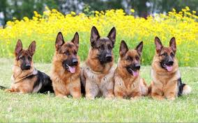

Фото собак

Німецька вівчарка (нім. Deutscher Schäferhund) — порода собак, виведена у Німеччині в 1899 році. Породу вивели спеціально для догляду за вівцями, тому собаку й називають вівчаркою.Окрім власне вівчарської служби, Штефаніц прагнув знайти для німецької вівчарки й іншу роботу, таку, яка б розкрила всі можливості цих собак і зробила їх для всіх корисними. Німецьку вівчарку узяли на озброєння поліція й армія, що шукали альтернативу дорогим англійським породам. Німецькі вівчарки виявилися першокласними поліцейськими й військовими собаками: у часи Першої світової війни вони прокладали телефонні кабелі, підтримували зв'язок, шукали поранених, їх використовували під час патрулювання й варти. А після армії та поліції майже всі країни світу взяли на службу німецьких вівчарок.
Походження  Німеччина
Німеччина
Якщо у Британії, Франції й Бельгії є по кілька вівчарських порід — і довгошерстих, і жорсткошерстих, і короткошерстих, — то німці з великої кількості селянських вівчарських собак вивели лише одну породу. Ще наприкінці XIX століття німецьку вівчарку вважали плебейським собакою. Більше того, багато любителів імпортних англійських порід вважали, що розводити «собак вовчого типу шкідливо» — але знайшлася людина, яка створила на їхній основі найкращого службового собаку світу: Макс фон Штефаніц, який своє життя присвятив створенню й удосконаленню німецької вівчарки. Він стверджував, що німецька вівчарка — це насамперед робочий собака: і інтелект, і краса, і правильність будови вівчарки — усе забезпечує його працездатність та відданість господарю.